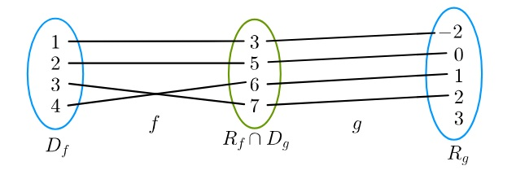
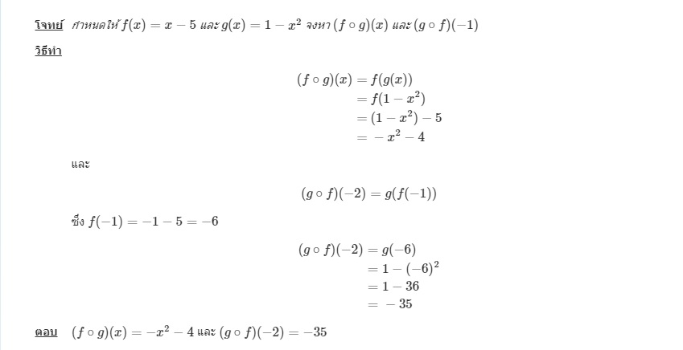
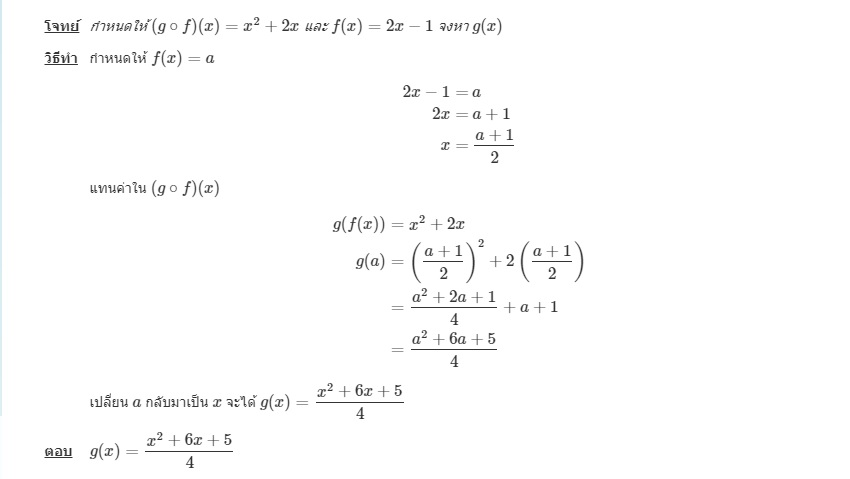

ให้ f , g เป็นฟังก์ชัน ซึ่ง Rf ∩ Dg ≠ ∅ ฟังก์ชันคอมโพสิทของ f และ g ที่ x เขียนแทนด้วย ( g ∘ f )( x ) โดยที่
( g∘f )( x ) = g(f(x)) สำหรับทุก x ซึ่ง f(x) ∈ Dg
โดเมนของ g∘f คือ Dg∘f = { x ∈ D f | f(x) ∈ Rf ∩ D g }
ตัวอย่างฟังก์ชันคอมโพสิท
กำหนดให้ f = { ( 1 , 3 ) , ( 2 , 5 ) , ( 3 , 7 ) , ( 4 , 6 ) } และ g = { ( 3 , −2 ) , ( 4 , 3 ) , ( 5 , 0 ) , ( 6 , 1 ) , ( 7 , 2 ) }
จงเขียน g∘f , f∘g , f∘f และ g∘g

เริ่มต้นจากโดเมนในฟังก์ชัน f เช่น x = 1 ส่งผ่านไปยัง f(1) = 3 และส่งต่อไปยัง g(f(1)) = g(3) = −2 จะได้ว่า (g∘f)(1) = −2
ดังนั้น g∘f = { ( 1 , −2 ) , ( 2 , 0 ) , ( 3 , 2 ) , ( 4 , 1 ) }
ในทำนองเดียวกัน เราจะได้
f∘g = { ( 4 , 7 ) , ( 6 , 3 ) , ( 7 , 5 ) }
f∘f = { ( 1 , 7 ) }
g∘g = { ( 4 , −2 ) }
กำหนด f , g และ h เป็นฟังก์ชัน แล้ว
1. ถ้า f : A ⟶ B และ g : B ⟶ C แล้ว g∘f : A ⟶ C
2. ถ้า f : A ⟶ B และ g : B ⟶ C แล้ว จะได้ Dg∘f = A และ Rg∘f ⊂ C
3. ถ้า f : A ⟶ทั่วถึง B และ g : B ⟶ทั่วถึง C แล้ว g∘f : A ⟶ทั่วถึง C
4. ถ้า f : A ⟶1−1 B และ g : B ⟶1−1 C แล้ว g∘f : A ⟶1−1 C
5. ( f∘g ) ∘ h = f ∘ ( g∘h )
6. ถ้า f เป็นฟังก์ชัน 1−1 แล้ว ( f ∘ f−1 )( x ) = ( f−1 ∘ f )( x ) = x แต่ไม่จำเป็นที่ f ∘ f−1 = f−1 ∘ f
7. ถ้า f : A ⟶1−1 B และ g : B ⟶1−1 C แล้ว ( g∘f )−1 = f−1 ∘ g−1
ตัวอย่างฟังก์ชันคอมโพสิท

ตัวอย่างการหา g(x) จากฟังก์ชันคอมโพสิท (g∘f)(x)
